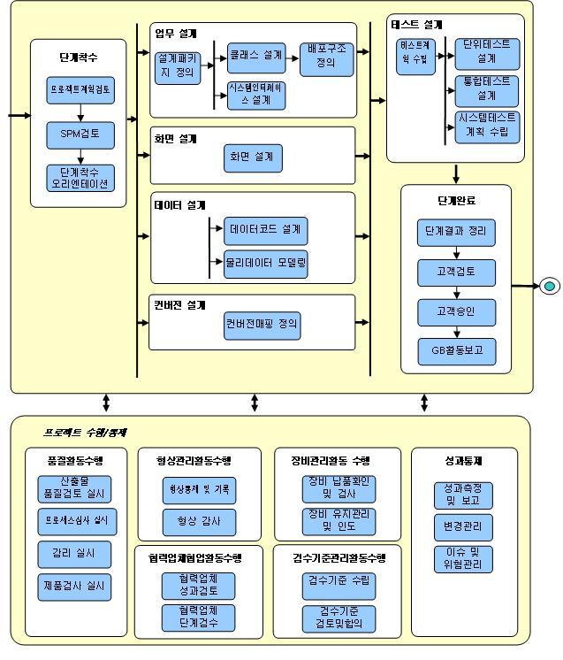

1. 개요 (Overview)
|
구분 |
내용 |
|
목표
(Goal) |
정의된 분석 단계의 결과에 따라 각 요구 사항을 시스템 구성 요소에 배분하고 구성 요소들간의 인터페이스를 구조적으로 설계하여 구현 가능하도록 시스템 및 소프트웨어 언어로 전환한다. |
|
수행 범위
(Process Scope) |
l 업무 설계 : 분석모델을 아키텍처에 따라 기술구조를 반영하여 설계클래스를 도출하고, 도출된 설계클래스의 내부구조 및 클래스 간 관계를 정의
l 화면 설계 : 소프트웨어 아키텍처에 따라 기술구조를 도출된 화면에 반영하여 설계 구성요소 및 구성요소 간의 관계, 구성요소의 내부처리 로직 등을 정의
l 데이터 설계 : 데이터베이스 시스템의 특성 및 성능을 고려하여 목표 시스템의 물리적인 데이터베이스 구조를 정의
l 컨버전 설계 : 각 컨버전 대상에 대해 기존 시스템으로부터 목표 시스템으로의 매핑정보를 정의
l 테스트 설계 : 테스트 단계(단위, 통합, 시스템, 인수 테스트)를 정의하고 각 단계의 테스트의 책임과 역할, 범위, 방법, 일정, 자원 등을 계획하며, 각 단계의 테스트를 계획하고 테스트를 위한 테스트 시나리오를 작성 |
2. 정책 (Policy)
2.1 프로젝트의 각 서브시스템 별로 선정된 PL의 책임 하에 설계자가 설계 단계를 수행한다.
2.2 설계 단계는 분석 단계의 결과에 따라 각 요구사항을 시스템 구성 요소에 배분하고 구성 요소들간의 인터페이스를 구조적으로 설계하여 구현 가능하도록 시스템, 소프트웨어 언어로 전환하는 과정이다.
2.3 설계 단계에서는 분석 단계에서 파악된 ‘무엇’에 해당하는 요구사항을 컴퓨터 시스템의 구현 관점에서 ‘어떻게’ 해결할 것인가를 결정한다.
2.4 테스트 계획은 테스트를 주관할 테스트 관리자가 수립하며, 테스트 수행을 위한 프로젝트 팀원의 역할 할당 및 절차를 수립한다. 테스트 계획서가 작성되면 PM 및 인수책임자의 승인을 확보하도록 한다.
3. 공정 흐름도(Process Flow Diagram)

4. 고려사항(Considerations)
4.1 설계 단계에서는 시스템 기능 구현을 위한 모든 로직과 개발 환경 및 운영환경, 성능을 고려한 모든 설계 요소들의 결정이 내려진다. 따라서 설계 단계의 최종 산출물인 설계 모델은 개발을 위한 상세 항목이 결정된 모델로서 이후 단계 수행의 기준이 된다.
4.2 테스트 계획 수립은 설계 단계에서 완료하고, 개발 단계에서 테스트는 코딩과 함께 진행된다. 일반적으로 개발 단계에서 단위 테스트, 통합 테스트, 시스템 테스트를 수행하여 개발 산출물이 설계 산출물대로 작성되는지를, 즉 사용자의 요구사항이 제대로 반영되었는지를 확인한다..
4.3 모든 기능 요건이 설계 내용에 모두 포함되어 있으며 목표로 하는 품질 요건을 충족시킬 수 있을 지에 대해 검증한다. |